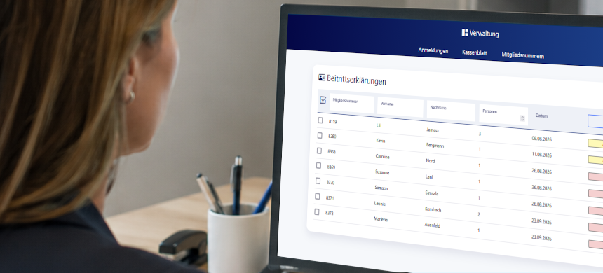

Making membership administration easier to manage.
A central platform for Berlin's largest swimming club that replaces scattered manual tasks with one clear and dependable way of working.
Discuss a similar project
Important work was spread across too many manual steps.
Managing more than 5,000 active memberships involves applications, payments, documents, communication, and many recurring checks. When these tasks live in separate lists and routines, employees spend valuable time searching, transferring information, and correcting avoidable mistakes.
The goal was not simply to digitize forms. It was to create a reliable working environment that reflects how the organization actually operates and gives the team a clear overview of every case.
One platform shaped around the team's daily work.
I worked independently from process analysis through interface design and implementation. Regular feedback from the people using the system helped turn complex rules into clear steps, sensible views, and useful safeguards.
The platform brings member information, payments, documents, and recurring processes together. Repetitive actions are prepared automatically, while decisions that require experience remain with the team.
Less administrative friction and more confidence.
The office team gains a shared source of information and can follow the status of a membership without piecing it together from different places. Standard tasks become faster and more consistent, and new functions can be added as the organization develops.
For a prospective employer or client, this project demonstrates my ability to understand a complex organization, communicate with non-technical stakeholders, and take long-term ownership of business-critical software.